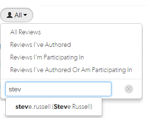

Open topic with navigation
How do I change the author of a review?
If the author of a review is no longer available, or ownership of a review is passed to a different developer, it is useful to be able to change the author of that review.
Note
By default you cannot change the author of a review, this option must be enabled by your Swarm administrator. See Allow author change for details.
Tip
If you already have the review open in Swarm you can skip to step 5.
- Click the Reviews link in the main toolbar.
- Click the User drop down and search for reviews by the author you want to replace. The list will auto-complete with users as you type.

- Select the author from the list, reviews by that author are displayed.
- Click the ID of the review you want to change the author on.
- Click the Author edit icon and search for the new author name. The list will auto-complete with users as you type.
- Select the new author name and click Save.
- The review will display the new author's avatar in the author area of the review page.